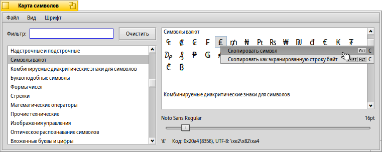

Таблица символов (CharacterMap)
Таблица символов (CharacterMap)
| Расположение в Deskbar: | ||
| Расположение в Tracker: | /boot/system/apps/CharacterMap | |
| Настройки хранятся по адресу: | ~/config/settings/CharacterMap settings |
Таблица символов (CharacterMap) покажет Вам код UTF-8 каждого символа, поддерживаемого шрифтом.
Слева выделены стандартные блоки символов, имеется удобная функция фильтрации. Опционально вы можете выбрать в меню . Справа отображаются символы, соответствующие этим блокам, с использованием шрифта, указанного в меню . Ниже вы можете изменить размер шрифта и посмотреть hex-, десятичный и UTF-8 код символа, под которым находится указатель мыши.
С помощью метода drag&drop Вы можете переместить символ из таблицы прямо в текстовый редактор или кликнуть правой кнопкой мыши и выбрать пункт меню (ALT C) или (SHIFT ALT C). В результате чего вы получите € или же \\xe2\\x82\\xac.